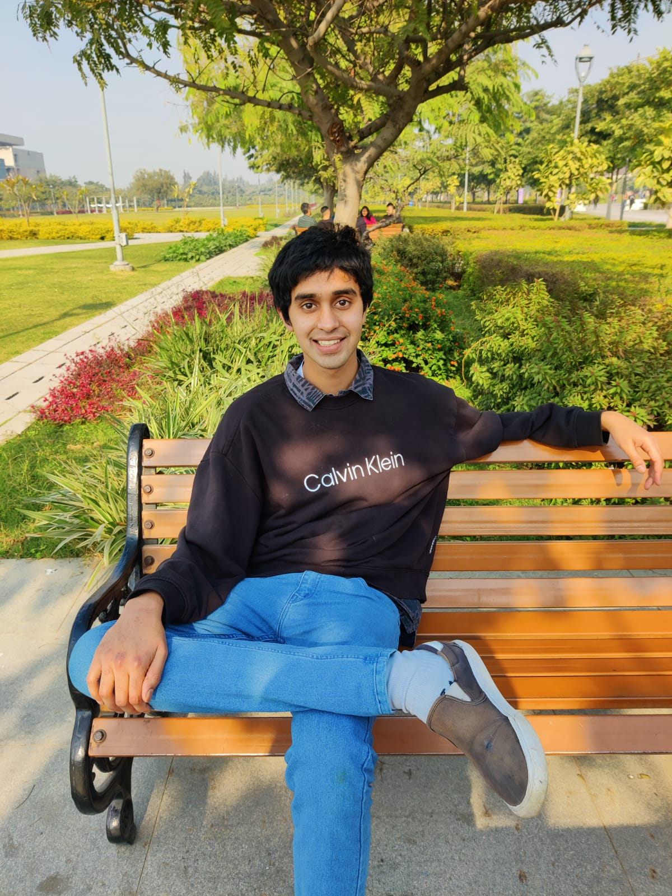

Sharath Sonti
Ph.D. Candidate in Economics, U.C. Berkeley
Welcome! I'm a Ph.D. Candidate in Economics at U.C. Berkeley.
I am a macroeconomist with interests in Monetary Economics, Expectation Formation, and Behavioral Household Finance.
You can find my CV here.
Contact: sharath_sonti@berkeley.edu